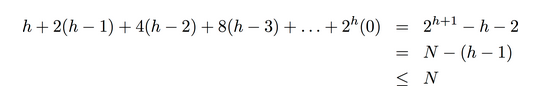

1. API and elementary implementations
Collection: data struct for inserting and deleting items (ex. stack and queue).
Priority queue: a special kind of collection — remove largest/smallest element.
API:
public class Max<Kye implements Comparable<Key>>{
public MaxPQ();
public void insert(Key k);
public Key delMax();
public boolean isEmpty();
public Key max();
int size();
}
PQ client example
find M largest elements from N items. (N is too huge to store)
⇒ 思路: 用 MinPQ, 当size>M时删掉最小元素 — 最后剩下的就是最大的M个元素了.

elementary(naive) implementations
unordered array implementation
insert ~1,
remove ~N
ordered array implementation
insert ~N — ~ insertion sort,
remove ~1
goal:
insert O(lgN) & remove max O(lgN)
2. Binary Heaps
binary heap: a special kind of complete binary tree.
def. "complete binary tree"
All level except the last level are full, all nodes in the last level are as far left as possible.
完全二叉树大概长这个样子:

property: a complete binary tree with N items has height = lgN.
def. binary heap
Binary heap is a complete binary tree that satisfies: each node >= any of its 2 children ("heap ordering").
property of binary heap:
- max element is root
- height is lgN
- each node still makes a heap (use this property to construct heap from bottom up)
Array representation of binary heap
Use an array a[] to represent a complete binary tree: very easy to get children and parent.
- index starting from 1 (root = a[1], do not use a[0])
- for node at index
i, its children are:i*2andi*2+1 - for node at index
i(i>1), its parent is:i/2

Implementation
简言之就是:

内部成员变量:
public class MaxPQ<Key implements Comparable<Key>>{
private Key[] a;
private int N;
}
siftup (swim)
if a node is larger than its parent: exchange with parent until heap ordering is restored.
private void swim(int k){
while(k>1 && less(a[k/2], a[k]){
exch(a,k,k/2);
k /= 2;
}
}
⇒ use siftup for inserting elements
when inserting an element, first append it to the end of the array, then siftup the element to its right position.
public void insert(Key k){
a[N++]=x;
swim(N);
}
siftdown (sink)
if a node is smaller than its children: exchange it with the bigger child. 用公司高层变动来类比很形象...
private void sink(int k){
while(k*2<=N){
int maxIndex = less(a[k],a[k*2])? k*2 : k;
if(k*2+1<=N && less(a[maxIndex],a[k*2+1]) maxIndex = 2*k+1;
if(maxIndex==k) break;
exch(a,k,maxIndex);
k = maxIndex;
}
}
⇒ use siftdown for deleting max operation
First put a[N] to the position of root, then sink. (注意要防止loitering)
public Key delMax(){
Key ret = a[1];
a[1] = a[N];
a[N--] = null; // avoid loitering
sink(1);
return ret;
}
Analysis
insert: ~lgN
remove max: ~lgN
improvements:
- use a d-way heap instead of a 2-way heap (for ex. 3-way heap, the children of i are i3, i3+1, i*3+2, the parent of i is i/3)
- Fibonacci heap: insert is ~1, remove max still ~lgN, (but too complicated to use in practice).

considerations:
- use immutable keys to avoid client from changing the keys (
finalkeyword in java) - underflow/overflow: throw exceptions for delMax() when empty, use resizing array for implementation.
- expand the API with other operations: remove an arbitrary item, change the prority of an item (like handling an array)...
3. Heapsort
Basic idea:
- create a max heap with all N entries ("heap-construction")
- then repeatedly remove all N items ("sortdown")
Implementation
heap construction
Construct the heap using a bottom-up method: build the heaps with small size first.
- one-node heaps (jus leaf node of heap): need not consider
- larger heaps: children(subtrees) are already heap-order → just perform sink operation for root
⇒ sink elements at indices from N/2 to 1
for(int k=N/2; k>=1; k++) sink(k);
→ complexity is linear, see analysis below.
heap destruction
now that we have a max-heap, to get the sorted array in-place, simply do:
while(N>1){
exch(a,1, N--);
sink(1);
}
Analysis
proposition
Heap construction uses <2N compares and exchanges.
proof
一个有h层的heap, 高度为k的subtree有 2^(h-k)个, 每个subtree最多可以交换k次(从root交换到最底层)
→ 每一层最多有 k*2^(h-k) 次交换

(第一个等式可以用数学归纳法证...)
详细证明见http://algs4.cs.princeton.edu/24pq/ (Q20答案)
proposition
Heapsort use < 2NlgN compares and exchanges.
Heapsort is the first in-place sorting algorithm with NlgN worst-case performance.

⇒ heapsort is optimal for time and space, but:
- inner loop is longer than quicksort
- poor use of cache memory (too many references to cache — look far away from the array entry when going down through the tree)
- not stable: because it does long-distance exchanges
Summary:

4. Event-driven simulation
Goal: simulating the motion of N particles in elastic collision (using a priority queue).

model

bouncing balls (without collision)

Ball class:

challenge: which objects to check? How to do it efficently ?
Time driven simulation
- upate the position of balls every
dtseconds - if overlap detected: figure how the velocity change and continue the simulation.
problem with time-driven simulation:
- 1/2*N^2 overlap check per time unit
- if dt small: too much calculation
- if dt too large: might miss collisions
Event driven simulation
change state only when something happens
- particles move in straight line before collision
- → collision time can be predicted
- maintain PQ for collisions, key=collision time
collision prediction
input: each particle has radius s, position (rx, ry), velocity (vx, vy).


(美国高中物理这么凶残?...)
Implementation
anyway, 这个是封装好的类:

注意, 使用了count记录一个particle到目前为止的碰撞次数.
initialization: quadratic
- Fill PQ with all potential particle-particle collisions
- Fill (the same) PQ with all potential particle-wall collisions
Main loop
- get next event from PQ, event time = t
- ignore if the event is invalidated
- advance all particles to time t
- update velocities
- predict future collisions and insert to PQ

判断invalidate:
一个event构造(predict)时记录粒子构造时刻的碰撞次数(countA, countB),
然后在调用invalidate的时候, 如果粒子的碰撞次数发生了改变, 则返回false.
(详见他们的代码: http://algs4.cs.princeton.edu/61event/CollisionSystem.java.html)
Event class:


Comments !